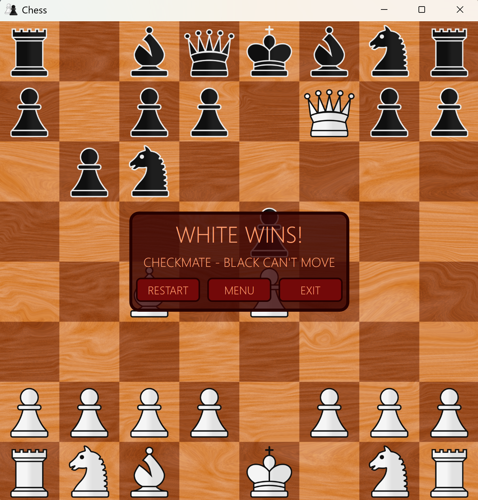

This project is a simple chess game with local multiplayer and computer opponents. I used the WPF framework for its UI capabalities. The backend code is all C#, and includes a number of custom classes that define the rules and constraints of chess.
The game also has a bonus project-within-a-project, which is a genetic algorithm. My genetic algorithm solves the Ladder Mate, a classic chess problem, in an average of around 200 generations. The "hard mode" ai is my attempt at recreating the widely used MiniMax algorithm, which is a staple in the best chess engines.
Unfortunately, due to the constraints of my architecture, my MiniMax runs fairly slowly. The main problem is that I used 2D arrays to represent the board, which leads to a lot of O(n^2) nested for loops. The fastest chess engines use bitboards (64-bit integers) to represent the chess board. This is a much more efficient approach, but I am happy with my own results for my first attempt at a chess engine.
The 2-player mode functions flawlessly and includes all of the standard chess rules; checkmate/stalemate detection, pawn promotion, castling, etc. I would like to try my hand at it again in the future using bitboards, and with a different technology that will allow the game to be deployed on other platforms apart from Windows. The value of this project is the experience I gained from it.